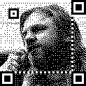
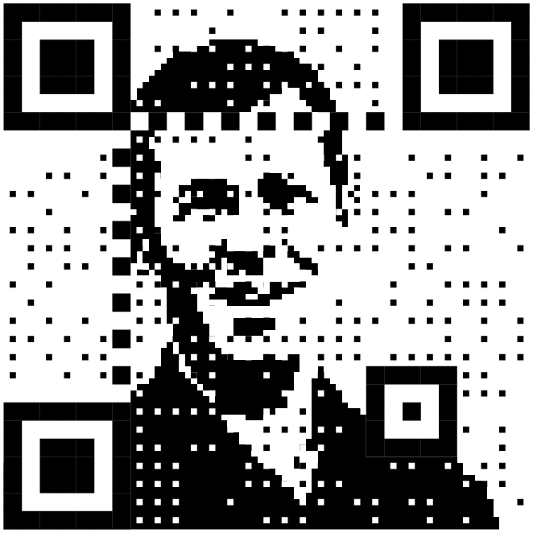
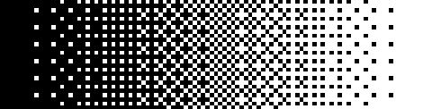
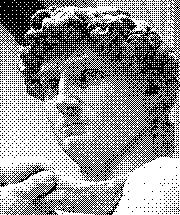
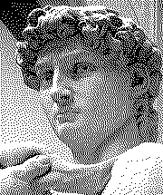
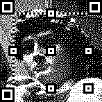
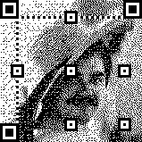

A QR code is really just a way of encoding a few bytes of data in a way that can be easily read from a photo by a smartphone or similar device. They're designed to be very robust to bad focus, bad printing, funny angles, and missing areas. Exactly how they work isn't terribly important, but for the purposes of this page, a QR code is a grid of squares that divide into two parts — the function patterns (which are the bold shapes in the above example) and the data modules (everything else). The function modules are mostly used to let the scanner find the QR code easily, so they have to be very clear and distinct. The data modules are where the actual data is stored, along with some extra header data etc, and since those are only read after the scanner has used the function modules to work out exactly where the QR code is, they can be modified a bit more. This is often used by brands to create QR codes that look a bit distinctive, and while this kind of modification makes them a bit less robust when scanning, but you can generally get away with a fair bit before the codes become unscannable.

This is a QR code I saw on Mastodon. One of the modifications you can do with the data modules is to shrink them — the scanner will look where the finder patterns say the centres of the pixels should be, and so as long as the code isn't distorted when you try to scan it. That means the rest of the space is yours to play with. Dave divides each pixel into a three-by-three grid, and uses the middle one to store the data, and the others for a photo. The result is a low-res, one-bit photo with some salt-and-pepper noise on it.

Obviously when we crush an image into a low colour depth, we don't normally just threshold it — that is, make the dark pixels black and the light pixels white. We normally use a kind of chequerboard effect to create midtones as well. A Bayer filter can be used to apply this idea across a whole image without having to sacrifice too much fine detail.

An attempt to improve on this method was Floyd-Steinberg dithering.

In this method, you start in the top left and threshold the pixel normally — if it's more than 50% brightness, you make it white, and otherwise you make it black. Say it was 70% brightness — we're going to make it white, which is 100% brightness, which means we've added 30% of a pixel too much brightness. To counteract that, we're going to "diffuse" that error to other pixels — all the nearby pixels that we haven't thresholded yet are made a few percent darker, to a total of 30% of a pixel. When we come to threshold those pixels, we'll take that into account. The idea is that once we've thresholded the entire picture, every part of the image will be, on average, closer to the correct brightness than more regular dithering. The irregular patterns are also a bit less distracting.
The other advantage of this irregular dithering is that the salt-and-pepper noise caused by the QR code data modules is much harder to spot. But it's still there, and it's why the image looks so noisy. I mean, it would look fairly noisy anyway because it's a 147×147 pixel one-bit image, but some of that noise is because one in nine of the pixels are effectively random colours.
But we can solve that using more error diffusion.
In this case, we're doing two passes on the error diffusion. The second is the same as normal, but the first is specifically to mask the data modules. We already know what colour all of those pixels have to be, so we can make them those colours and diffuse that error to the surrounding eight pixels. The error will potentially be quite big — normally we get to choose the colour so the error can never be more than 50%, but here we might have to make a pixel in a dark area pure white and end up creating 95% error. That sounds bad, but that's exactly why it's so important to diffuse this error instead of just accepting it.

You can see that this makes the image much cleaner.

The generator tool allows you to do some extra tricks. You can rotate the QR code before adding the image, and tinker with the QR code settings to see if any of the alternative encodings happen to look nicer.
You can also allow the generator to change a few of those 95%-error data modules — QR codes have enough error correction in them that you can afford to change a few pixels and they'll still scan. (That's how QR codes with logos in the middle work.) But in practice that doesn't really affect image quality much if you diffuse the error from the data modules and it seriously affects how well the code scans.
This all works pretty well if you don't take it too far and the code is going to be on a big screen or a poster or something. If it's on, say, a paper flyer that could get crumpled then you're going to need more of that redundancy, robustness and error correction that we gave up to make the QR code pretty. Ultimately it's a trade-off between aesthetics and scannability — and remember that just because a code scans on your phone, from a laptop screen, doesn't mean it will scan on a random stranger's potato phone from a printout in bad lighting.
Also bear in mind that the generator tool makes tiny images with no margin — some margin is needed to make a QR code scan reliably, and browsers will normally blur images when upscaling them if you don't disable that with CSS. The margin has to be the opposite colour to the middle of the big three "finder" pattern squares — normally that's white but you can generate inverted QR codes that need a black background instead.